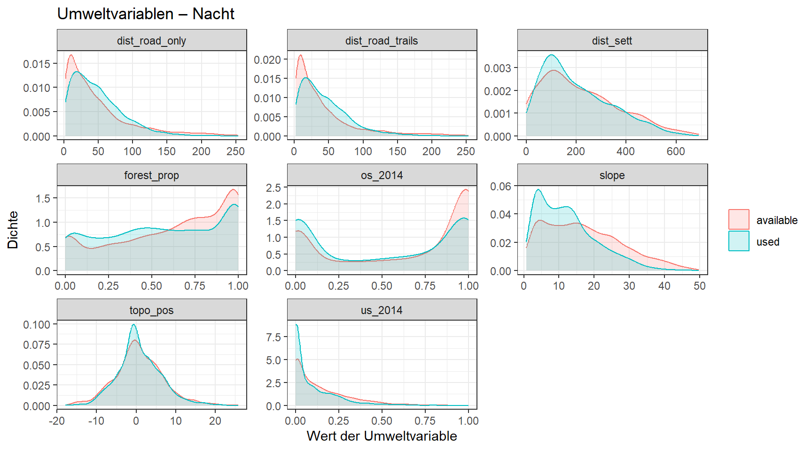
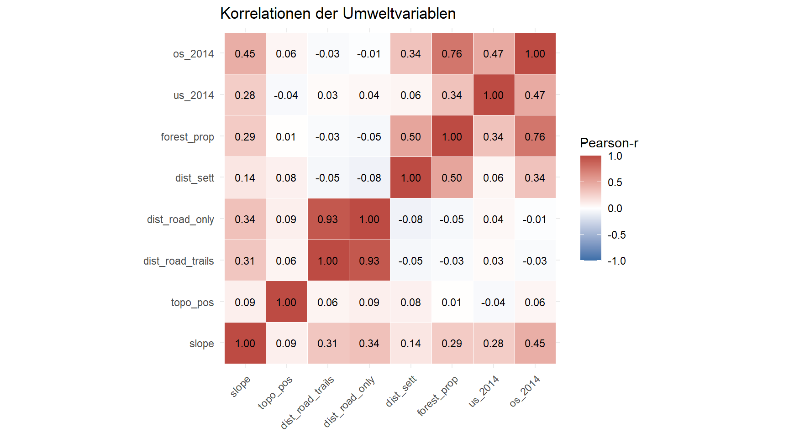
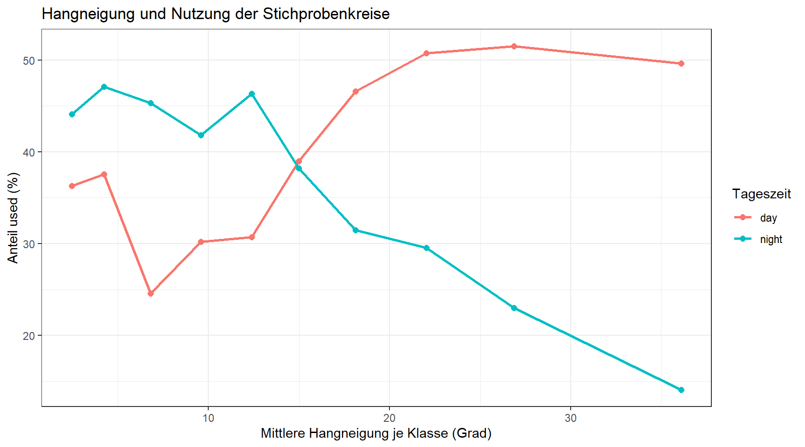

library(readr)
library(dplyr)
library(tidyr)
library(ggplot2)
options(scipen = 999)Multivariate Modelle – Vorbereitung der Modellierung
Ziel und Einordnung
Wir untersuchen die Ressourcenselektion von Rehen im Sihlwald und in seiner Umgebung. Grundlage ist ein Datensatz mit Stichprobenkreisen innerhalb der individuellen Streifgebiete. Für jeden Kreis liegen Umweltvariablen sowie eine Kennzeichnung vor, ob der Kreis vom jeweiligen Reh genutzt wurde (pres_abs = 1, used) oder als verfügbarer Vergleichskreis (pres_abs = 0, available) in die Untersuchung eingeht.
Wichtig: pres_abs = 0 bedeutet hier nicht, dass das Reh dort nachweislich nie vorkommt. Die Vergleiche zwischen used und available beschreiben die relative Nutzung im Verhältnis zum verfügbaren Angebot in der Homerange. Die zugrunde liegenden Daten und Variablendefinitionen findet ihr in der Aufgabenstellung zur Fallstudie.
HinweisAUSFÜHREN & NACHVOLLZIEHEN
Der R-Code ist vorgegeben und wird auf dieser Seite angezeigt. Übernehmt ihn in euer eigenes R-Skript, führt ihn aus, untersucht die Ausgabe und beantwortet die Fragen.
TippSELBST PROGRAMMIEREN
Hier entwickelt ihr den Code selbst in eurem R-Skript. Hinweise oder unvollständige Codebeispiele helfen beim Einstieg. Die Musterlösungen werden eine Woche nach der Übung auf dieser Seite freigeschaltet.
Vorbereitung – Packages und Daten
HinweisAUSFÜHREN & NACHVOLLZIEHEN
Aufgabe 1 – Datensatz und Beobachtungseinheiten kennenlernen
HinweisAUSFÜHREN & NACHVOLLZIEHEN
Lest die CSV-Datei ein. Passt den Pfad bei Bedarf in eurem eigenen R-Skript an.
DF_reh <- read_delim("datasets/fallstudie_n/Aufgabe_Multivariate_Modelle/Datensatz_Modelle_Habitatnutzung_Reh_261102.csv", delim = ";")
vars_umwelt <- c(
"slope", "topo_pos", "dist_road_trails", "dist_road_only",
"dist_sett", "forest_prop", "us_2014", "os_2014"
)
stopifnot(all(c("pres_abs", "id", "time_of_day", vars_umwelt) %in% names(DF_reh)))
stopifnot(all(vapply(DF_reh[vars_umwelt], is.numeric, logical(1))))
stopifnot(all(na.omit(DF_reh$pres_abs) %in% c(0, 1)))
str(DF_reh)
dim(DF_reh)
# Beobachtungen nach Reh und Tageszeit
table(DF_reh$time_of_day, useNA = "ifany")
DF_reh |> count(id, time_of_day)
# Wie viele Rehe und wie viele used/available-Kreise?
n_distinct(DF_reh$id)
DF_reh |> count(time_of_day, pres_abs)
TippSELBST PROGRAMMIEREN – Datenkontrolle
Ermittelt, wie viele Rehe der Störungskategorie gering beziehungsweise stark zugeordnet sind. Achtung: Zählt jedes Reh nur einmal, nicht jede Datenzeile. Verwendet dafür distinct() und count().
# Tipp: distinct(id, stoerungskategorie) und danach count()Musterlösung
# Ausgeben, wie viele Individuen jeder Störungskategorie zugeordnet sind:
DF_reh |>
distinct(id, stoerungskategorie) |>
count(stoerungskategorie, name = "anzahl_rehe")
## # A tibble: 2 × 2
## stoerungskategorie anzahl_rehe
## <chr> <int>
## 1 gering 7
## 2 stark 5Aufgabe 2 – Tag- und Nachtdatensatz bilden
TippSELBST PROGRAMMIEREN – Datenkontrolle
Wir untersuchen die Habitatnutzung am Tag und in der Nacht getrennt. Die Umweltwerte wurden für Tag und Nacht in den dieselben Stichprobenkreise ermittelt (Ganztages-Homeranges). Überlegt euch in diesem Zusammenhang, warum sich die Verteilungen der Umweltvariablen zwischen Tag und Nacht unterscheiden können, obwohl die Umweltwerte der Stichprobenkreise identisch sind?
DF_reh_day <- DF_reh |>
filter(time_of_day == "day")
DF_reh_night <- DF_reh |>
filter(time_of_day == "night")
nrow(DF_reh_day)
## [1] 3964
nrow(DF_reh_night)
## [1] 3964
table(DF_reh_day$pres_abs)
##
## 0 1
## 2391 1573
table(DF_reh_night$pres_abs)
##
## 0 1
## 2533 1431Aufgabe 3 – Used und available vergleichen
HinweisAUSFÜHREN & NACHVOLLZIEHEN
Die Dichtekurven zeigen, welche Werte der Umweltvariablen in den genutzten und verfügbaren Kreisen häufig vorkommen. Die Kurven sind innerhalb jeder Gruppe auf eine Gesamtfläche von 1 normiert: Sie zeigen keine absolute Nutzungswahrscheinlichkeit.
plot_used_available <- function(datensatz, titel) {
daten_lang <- datensatz |>
mutate(gruppe = factor(
pres_abs,
levels = c(0, 1),
labels = c("Absenz", "Präsenz")
)) |>
select(gruppe, all_of(vars_umwelt)) |>
pivot_longer(
cols = all_of(vars_umwelt),
names_to = "variable",
values_to = "wert"
)
ggplot(daten_lang, aes(x = wert, colour = gruppe, fill = gruppe)) +
geom_density(alpha = 0.18, na.rm = TRUE) +
facet_wrap(~ variable, scales = "free", ncol = 3) +
labs(
title = titel,
x = "Wert der Umweltvariable",
y = "Dichte",
colour = NULL,
fill = NULL
) +
theme_bw()
}
plot_used_available(DF_reh_day, "Umweltvariablen – Tag")Diskutiert: Welche Unterschiede zwischen used und available fallen euch besonders auf?
TippSELBST PROGRAMMIEREN – Nachtdatensatz
Erstellt denselben Satz von Dichteplots für die Nacht. Vergleicht insbesondere slope mit dem Tag.
# Tipp: plot_used_available(datensatz, titel)Musterlösung
plot_used_available(DF_reh_night, "Umweltvariablen – Nacht")
Aufgabe 4 – Korrelationen zwischen den Umweltvariablen
In Statistik 3 habt ihr Korrelationen kennengelernt. Bevor wir mehrere Umweltvariablen gemeinsam in einem Modell verwenden, untersuchen wir, welche Prädiktoren miteinander korrelieren. Stark korrelierte Variablen können teilweise dieselben Umweltbedingungen beschreiben und später die Interpretation der Modellkoeffizienten erschweren.
TippSELBST PROGRAMMIEREN – Korrelationsmatrix
Recherchiert selbstständig die nötigen R-Befehle und entwickelt den Code.
- Berechnet eine Pearson-Korrelationsmatrix der acht kontinuierlichen Umweltvariablen (
vars_umwelt). VerwendetDF_reh_day; die Werte sind im Nachtdatensatz dieselben. - Stellt die Korrelationsmatrix in einer übersichtlichen Grafik dar (z. B. als Korrelationsplot oder Heatmap).
- Identifiziert die zwei Variablenpaare mit den stärksten absoluten Korrelationen. Welche Schwierigkeiten könnten solche Zusammenhänge bei einem multiplen Modell verursachen?
Die Entscheidung, welche Variablen in ein gemeinsames Modell aufgenommen werden, treffen wir in der folgenden Übung zur Variablenselektion nächste Woche.
Musterlösung
# Musterlösung mit Base R und den bereits geladenen Packages.
korrelationen <- cor(
DF_reh_day |> select(all_of(vars_umwelt)),
method = "pearson",
use = "pairwise.complete.obs"
)
round(korrelationen, 2)
## slope topo_pos dist_road_trails dist_road_only dist_sett
## slope 1.00 0.09 0.31 0.34 0.14
## topo_pos 0.09 1.00 0.06 0.09 0.08
## dist_road_trails 0.31 0.06 1.00 0.93 -0.05
## dist_road_only 0.34 0.09 0.93 1.00 -0.08
## dist_sett 0.14 0.08 -0.05 -0.08 1.00
## forest_prop 0.29 0.01 -0.03 -0.05 0.50
## us_2014 0.28 -0.04 0.03 0.04 0.06
## os_2014 0.45 0.06 -0.03 -0.01 0.34
## forest_prop us_2014 os_2014
## slope 0.29 0.28 0.45
## topo_pos 0.01 -0.04 0.06
## dist_road_trails -0.03 0.03 -0.03
## dist_road_only -0.05 0.04 -0.01
## dist_sett 0.50 0.06 0.34
## forest_prop 1.00 0.34 0.76
## us_2014 0.34 1.00 0.47
## os_2014 0.76 0.47 1.00
kor_long <- as.data.frame(as.table(korrelationen))
names(kor_long) <- c("variable_1", "variable_2", "r")
ggplot(kor_long, aes(x = variable_1, y = variable_2, fill = r)) +
geom_tile(colour = "white") +
geom_text(aes(label = sprintf("%.2f", r)), size = 3) +
scale_fill_gradient2(
low = "#3B6EA8", mid = "white", high = "#BD4B43",
midpoint = 0, limits = c(-1, 1), name = "Pearson-r"
) +
coord_equal() +
labs(x = NULL, y = NULL, title = "Korrelationen der Umweltvariablen") +
theme_minimal() +
theme(axis.text.x = element_text(angle = 45, hjust = 1))
Musterlösung
# Eindeutige Variablenpaare ohne Diagonale, nach |r| sortiert.
kor_long |>
filter(as.character(variable_1) < as.character(variable_2)) |>
mutate(abs_r = abs(r)) |>
arrange(desc(abs_r)) |>
select(variable_1, variable_2, r) |>
head(5)
## variable_1 variable_2 r
## 1 dist_road_only dist_road_trails 0.9320532
## 2 forest_prop os_2014 0.7642927
## 3 dist_sett forest_prop 0.5022949
## 4 os_2014 us_2014 0.4699228
## 5 os_2014 slope 0.4496421Aufgabe 5 – mögliche gekrümmte Zusammenhänge
HinweisAUSFÜHREN & NACHVOLLZIEHEN – Hangneigung und Nutzung
In Aufgabe 3 habt ihr die Verteilungen der Hangneigung (slope) für used und available verglichen. Jetzt betrachten wir denselben Zusammenhang andersherum: Wie verändert sich der Anteil genutzter Kreise mit zunehmender Hangneigung? Dazu teilen wir die Hangneigung in zehn Klassen mit ungefähr gleich vielen Kreisen ein und berechnen für jede Klasse den Anteil used – getrennt nach Tag und Nacht.
nutzung_slope <- DF_reh |>
group_by(time_of_day) |>
mutate(klasse = cut(
slope,
breaks = unique(quantile(slope, probs = seq(0, 1, 0.1), na.rm = TRUE)),
include.lowest = TRUE
)) |>
group_by(time_of_day, klasse) |>
summarise(
slope_mittel = mean(slope, na.rm = TRUE),
anteil_used = 100 * mean(pres_abs == 1, na.rm = TRUE),
.groups = "drop"
)
ggplot(nutzung_slope,
aes(x = slope_mittel, y = anteil_used,
colour = time_of_day, group = time_of_day)) +
geom_line(linewidth = 0.9) +
geom_point(size = 2) +
labs(
x = "Mittlere Hangneigung je Klasse (Grad)",
y = "Anteil used (%)",
colour = "Tageszeit",
title = "Hangneigung und Nutzung der Stichprobenkreise"
) +
theme_bw()
Frage: Wie unterscheidet sich der Verlauf zwischen Tag und Nacht? Ist die Beziehung jeweils ungefähr geradlinig, oder deutet sich eine Krümmung an?
Die Verbindungslinien beschreiben die beobachteten Klassenanteile. Eine Krümmung kann Anlass sein, im späteren Modell neben slope auch einen quadratischen Term I(slope^2) zu prüfen. Ob dieser Term die Modellanpassung verbessert, lässt sich aus der Grafik allein nicht entscheiden. Auch bei anderen Umweltvariablen könnten nichtlineare Zusammenhänge mit der Habitatnutzung bestehen. In den nächsten Übungen werden wir prüfen, ob die Berücksichtigung solcher Zusammenhänge die Modellanpassung verbessert.
Abschluss – Ausblick auf die Variablenselektion
Nehmt eure Korrelationsmatrix und die Beobachtung zur Hangneigung in die nächste Übung mit. Dort entscheiden wir, wie mit stark korrelierten Prädiktoren umzugehen ist, und vergleichen für slope einen linearen mit einem linearen und quadratischen Term in glmmTMB.